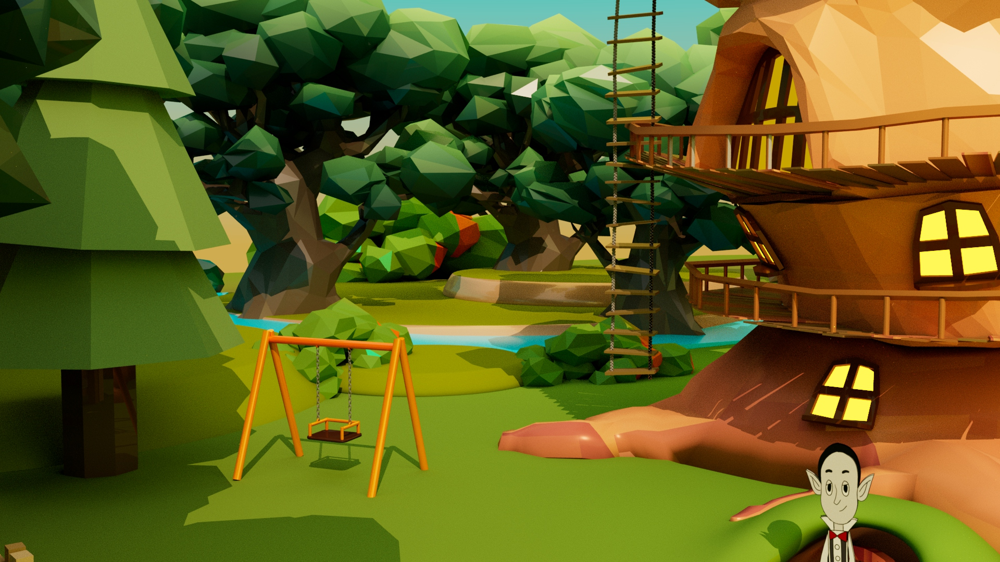
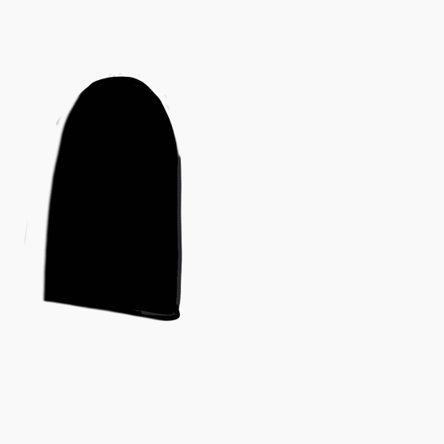

Forward
무언가를 좋아하는 마음을 솔직하게 드러내지 못하는 건 불행한 삶 아닐까?
나는 어릴 적 <암호명: 이웃집 아이들>, <검볼>, <핀과 제이크의 어드벤쳐 타임>, <파워퍼프걸>, <벤 10> ,<피니와 퍼브>, <지미 뉴트론>, 아바타: 아앙의 전설> 등 미국 카툰 네트워크 사, 니켈로디언 사의 애니메이션들 무척이나 좋아했다.
착한 아이가 되고 싶었던 나는 애니메이션을 보는 걸 멈추지 못하고 부모님 몰래 보느라 가끔 숙제를 못하기도 했다.
'어릴 적 보던 애니메이션을 아직도 봐? 유치하다.',' 이걸로 어떻게 돈을 벌려 그러지?'
내가 자신에게 했던 말들로, 억지로 좋아하고 끌리는 마음을 거부해왔고 스스로 솔직하지 못했다.
그러나 미대에 와 애니메이션과 다시 만나게 된 후, 내가 재미있게 할 수 있는 일들을 하는 것만으로도 큰 행복감을 느낄 수 있다는 걸 알게 된다. 이 작업을 하는 동안 나는 재미와 열정을 가지고 임할 수 있었다. 자료 리서치를 위해 애니메이션을 찾아보고, 새롭게 만들어갈 이야기를 상상하는 것만으로도 너무나 즐거웠다.
이 기획과 작품은 미완성이다. 나는 언젠가 나무집에 모여 사는 캐릭터들의 각양각색 이야기로 구성된 옴니버스 애니메이션을 만들고 싶다.
그리고 작가적 디자인 스튜디오(1) 수업을 통한 이 시도는 그 꿈의 첫걸음이다.
학기 초에는 혼자서 학생의 신분으로 한 학기 안에 여러 애니메이션 에피소드를 제작하는 것은 불가능하다고 생각해, 기획을 담은 아트북을 제작하는 데 그치려고 했다.
교수님과 상의 후, 이 애니메이션을 소개하는 인트로 영상을 제작하고 그 작업 과정 및 기획을 담은 아트 웹사이트를 만들게 되었다.
Introduction
성경, 그리스 로마 신화 등 신화적 세계관에서, 하늘 천상에는 이 세계를 창조한 신(선)이 살고 있다.
인간계의 아래 지옥에는 죽은 자들이 거주하거나 인간을 타락시키려는 악마가 있다.
그 사이 위치한 인간은 선과 악을 동시에 경험하고 행하며, 끊임없이 혼란스러워하고 변화한다.
나는 이 작품에서 신화적 세상을 집이라는 공간으로 축소했다.
선과 악, 생명과 죽음, 천상과 지하, 위층과 아래층과 계속 함께 살아가며 변화하고,
결국은 성장해 가는 인간의 인생을 비유하고자 한다.
Origins
<비구니>
2022년 영상(2) 수업을 수강하며 제작했던 과제물이다. 나에게는 3D 공간에 2D 핸드 드로잉 작업을 결합한 여러 시도 중 하나였다.
어릴 때는 낯설었던 엄마의 몇몇 모습들이 있었다. 특히 종교와 관련해서 이해할 수 없는 행동과 말들을 하던 엄마.
독립한 후 간만에 집에 돌아와 쉬던 어느 날, 엄마가 아침 식사를 준비하기 위해 무를 칼로 썰고 손에 담아 대야에 옮긴 적이 있다.
무가 대야 안으로 떨어져 나는 소리가 마치 절에서 들리는 목탁 소리 같았고, 그 순간 엄마가 절간 밖에서 수행하는 승려처럼 느껴졌다.
엄마를 조금이나마 이해하게 된 시기였다.
Character Design
나무집 지상의 아이들
숲 속 나무집으로 새로 이사 온 대가족. 노부부와 그들의 아들 부부, 아이들 세 명과 애완동물들까지...!
대가족이 살 곳이 필요해 급하게 집을 계약하고 이사한 것이 모든 일의 시작이었다.
집에 입주하고 보니 어딘가 이상한 것 같은 아래층, 위층 가족들!
나무집에서 이들과 함께 잘 살아갈 수 있을까?
요나

본패밀리 아이들의 첫째이다.
자연과 세상을 사랑하며, 밝고 긍정적인 성격을 가지고 있다
에이든
명확함, 근거, 논리를 중시. 과학과 발명을 좋아한다.
샤론
자신을 삼촌네 집에 맡기고 간 아빠 때문에 낯선 곳에서 살기 위해 일찍이 철이 들고 차분해졌다. 자기 앞가림은 스스로!
나무집 지하의 아이들
아주 오래전 부터 나무집 지하에 살아가던 가족들.
지하가족들의 집은 빛 하나 들지 않는 어둠에 둘러쌓여 있고, 곰팡이 벽지로 꾸며져 있다.
이 가족은 유전적으로 뱀으로 변하는 능력을 가지고 있다. 이들은 뱀으로 변하여 아래로 땅을 파고 자신들의 영역을 늘려나간다.
에블린

부모님의 간섭과 동생들이 귀찮은 사춘기 소녀이자 SNS에 푹 빠져 사는 인플루언서. 일탈을 꿈꾼다
밸런

정장으로 격식을 차린 얌전한 모범생. 악동 본능을 숨기고 사는 꼬마.
요나가 자신에게 어쩔 줄 몰라하는 것이 재밌어 장난을 친다
앨런
밸런과 쌍둥이. 누나와 동생과는 다른 자신의 모습을 고치고 싶어한다.
핑크색과 디저트를 좋아하지만, 어두컴컴한 집안 분위기에 드러내지 못하는 소년.
나무집 옥탑의 아이
아빠가 나무집을 짓고 어딘가로 떠나버린 후 엄마와 딸만 남았다.
사다리로 올라갈 수 있는 나무집 꼭대기 옥탑에 산다.
땅이 한 눈에 보이는 곳에서 아이들이 노는 모습을 바라보는 건 즐겁다.
수제즈

정원을 관리하고 손질하는 것이 취미이다.
이 집을 짓고 사라진 자신의 아버지를 그리워한다.
아버지가 남긴 집을 지키고 싶어한다.
자신이 태어나기 전부터 이 집에 살고 있던 지하 가족들을 은근히 못마땅하다.


지금도 내 곁에 있는 가까운 주변 인물부터, 지나갔지만 내 기억에 남은 사람들이 캐릭터의 외형과 성격을 구성하는 데 큰 도움이 되었다.
요나는 중학교 때부터 절친한 친구 B를 떠올리며 만들었다.
언젠가 구경 간 영화제에서 인생 작품을 만났고, 그 작품의 감독 K와 대화할 기회가 한 번 있었는데 에이든은 그를 닮았다.
수제즈는 고등학교 때 (따로 대화해본 적은 없지만) 당당하고 올곧아 보이던 회장 친구를 떠올리며 만들었다.
Background design & Painting
도심에서 벗어난 울창한 숲 속에 언제부터 있었는지 모를 나무집이 자리잡고 있다.
지하와 지상 3층, 옥탑집이 결합한 구조의 수직적인 나무 하우스에는 각양각색의 가족들이 거주하고 있다.
밸런의 가족들이 사는 지하집 입구이다. 땅굴 속에 입구가 있어, 바깥에서는 입구가 잘 보이지 않는다.
수제즈의 가족들이 사는 옥탑집이다.
나뭇가지에 묶인 사다리를 이용해 올라갈 수 있다. 넓은 옥상 위에서 하늘을 바라보며 뒹굴거릴 수 있다.

정원에는 놀이터, 별을 바라보며 잠 잘 수 있는 텐트, 고기를 구워먹을 수 있는 바비큐 시설, 창고, 쓰레기를 쌓아둔 고물상 등 가족들이 공용으로 사용할 수 있는 시설들이 있다.
봄에는 무지개 꽃잎이, 여름에는 초록색 나뭇잎이 무성하게 핀다.
Writing & Storyboarding
- 에피소드
(제목=집의 공간, 부속품들의 이름)
- 새 집
트리 하우스로 이사 온 본 패밀리.
이사 첫날 본 패밀리의 아이들 요나, 에이든, 샤론은 위층의 수제즈와 인사하고 집을 소개받는다.
집을 둘러보던 중 지하로 난 문이 궁금한 아이들은 질문하지만 수제즈는 말을 흐린다.
요나는 지하의 문 근처에서 그곳에 사는 아이 벨런을 만난다.
수제즈와 밸런은 본 패밀리 아이들에게 자기가 집 소개를 해 주겠다고 싸운다 - 집터
이 집의 시공자, 수제즈의 아버지는 현재 이 집에서 모습을 찾을 수 없다.
어머니와만 함께 사는 수제즈는 자신은 아버지가 있다고 말하며 본 패밀리의 아이들에게 아버지의 일기를 보여준다.
그러나 아이들의 반응은 각자 다르다. 에이든은 자신은 눈에 보이지 않는 건 믿지 않는다며 수제즈의 말을 믿지 않는다. 요나는 아버지와 떨어져 사는 수제즈에게 위로를 건넨다.
과연 수제즈는 진실을 말한 것일까? 수제즈의 아버지는 실제로 있을까? 아이들은 증거를 찾아 나선다 - 발코니
수제즈는 지하의 아이들에 대한 경고를 보낸다. 요나는 의문스러운 밸런이 자꾸 궁금하다.
2층 발코니에 걸터 서 생각에 잠겨있는 요나를 아래에서 밸런이 부르며 장난을 건다. - 샤론의 다락방
요나와 에이든의 삼촌이자 샤론의 아빠가 집으로 찾아왔다. 샤론은 오랜만에 만난 아빠에게 관심도 주지 않는다.
그녀의 마음은 방문처럼 굳게 닫혀있다. - 정원
정원을 관리하는 수제즈가 없는 사이 요나와 에이든이 정원을 어떻게 활용할지를 두고 고민한다.
요나는 동물들과 식물들을 키우고 싶어하고, 에이든은 자신이 발명한 기계장치를 두고 싶어한다. - 층간소음
다른 영역으로 침범
Sound & Vision

타이틀 로고 스케치
'The three story tree house'라는 글을 나무처럼 보이게 배치하였다.
Three를 나뭇가지처럼 보이게 만들고, 네모 프레임 안에 Tree House 알파벳을 넣는 방식으로 여럿이 모여 사는 집이라는 걸 시각화하고자 했다.
Animation

Reference
- '검볼'

미국 카툰네트워크 애니메이션 'Gumball'은 굉장히 다양한 애니메이션 기법을 쓴다. 2D, 3D, 실사, 낙서체, 8비트 등등.
가끔은 다른 애니메이션 제작사에 외주를 주어 일본 애니메이션,인형 등의 기법을 사용하기도 한다.
따라서 전체적으로 콜라주 느낌이 강하다. - '아담스 패밀리'

- '성경'
본인은 무교이나 평소 신화와 종교에 관심이 많아, 기획 설정의 많은 부분을 성경의 표현들에서 영감을 받았다.
수제즈의 보이지 않는 아버지와 그의 일기, 각자 다른 아이들의 반응은 God Father와 Bible, 그리고 신에 대한 다양한 인간들의 태도로 치환된다.
여호와 하나님이 뱀에게 이르시되 네가 이렇게 하였으니 네가 모든 육축과 들의 모든 짐승보다 더욱 저주를 받아 배로 다니고 종신토록 흙을 먹을지니라
창세기 3:14
지하에 사는 가족들의 집의 층수는 정해져 있지 않다. 부부가 정착하여 아이들을 한 명씩 낳고 가정을 꾸려가는 동안, 계속 아래를 파가며 그들의 방과 집의 크기를 늘려나간다. 그들은 뱀으로 변할 수 있으며, 흙을 먹으며 땅을 파낸다. 성경 속 아담에게 선악과를 먹게 한 뱀과 악, 죽음의 이미지를 지하가족 기획과 디자인에 사용했다.
수제즈(sujez)의 이름은 JESUS를 거꾸로 한 것이다. 신과 그의 아들, 천사, 선, 빛의 이미지를 가지고 있다.
Onward
현재는 기획 소개와 인트로 영상을 제작하는 데에 그쳤다.
그러나 이 작업은 미래에 내가 만들어낼 옴니버스 애니메이션 'The Three Story Tree House(가제)'의 시작이다. 본인은 추후 애니메이션 스튜디오에 영화감독으로 입사하여, 이 기획을 확장시켜 세상에 내놓겠다는 꿈을 가지고 있다.
 대학생이 된 요나 & 밸런
대학생이 된 요나 & 밸런
 대학생이 된 샤론
대학생이 된 샤론
 대학생이 된 수제즈
대학생이 된 수제즈